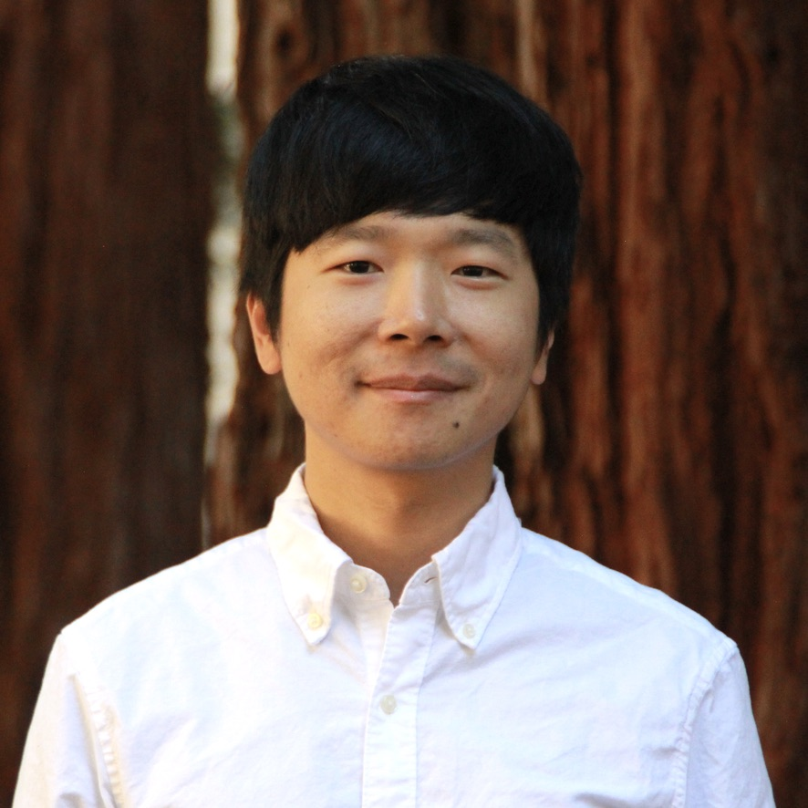

Gun-Yeal Lee
Postdoc at Stanford, Incoming Assistant Professor at KAIST
I am a Postdoctoral Researcher at Stanford University, working with Prof. Gordon Wetzstein at the Stanford Physical and Spatial Intelligence Lab. Before joining Stanford, I received my Ph.D. from Seoul National University, where I was advised by Prof. Byoungho Lee. In September 2026, I will join the School of Electrical Engineering at KAIST as an Assistant Professor.
My research explores how to shape and use light to create new interfaces between humans, computers, and physical systems. To this end, I study optics and photonics, with a particular focus on nanophotonics, optical systems engineering, and physics-informed machine learning. By combining these synergistic approaches, my goal is to develop next-generation photonic platforms for human-computer interaction and light-matter interaction in quantum computing, transforming how we see, interact with, and compute with the world.
I am launching my research group at KAIST in Fall 2026!
I am looking for motivated graduate students and postdocs to join me. If you are excited about optics and photonics, and their system-level applications in AR glasses, computational displays, and optical/quantum computing systems, please feel free to email Gun-Yeal with your CV for more information.